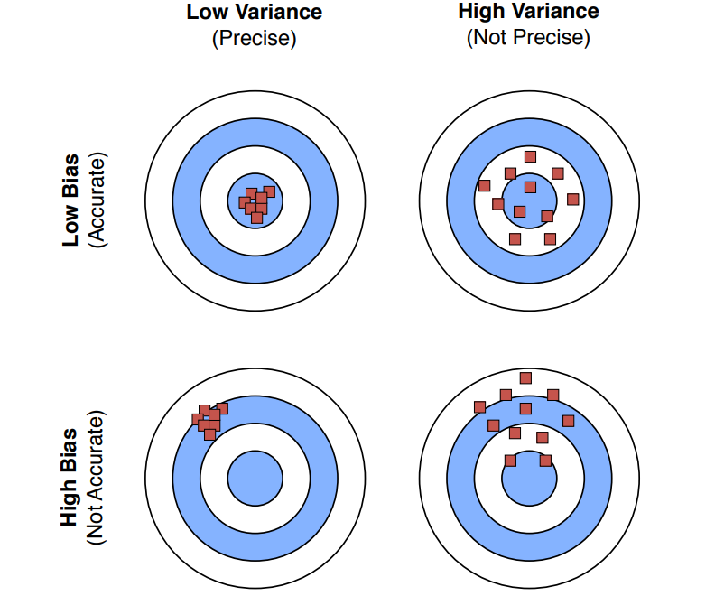

Bias, Variance, Overfitting, Underfitting, Regularisation
Data Handling: Train, Test, Validation
Just an Analogy
Let's get it quickly with an example. Suppose, we are preparing for a rare exam and for that we only
have 100 sample questions. All our preparation has to be done with that.
Now, let's assume there are two students, Hazelnut and Chocolate. What
Hazelnut did, was to use up all the questions. As he read the concepts, he practiced with all the 100
questions like examples, understanding the given answers.
But Chocolate, on the other hand, after reading the concepts, made a split. She separated out 20
questions randomly from the 100. And then she practiced with the 80 like Hazelnut did, read the answers
and understood. And at the end, she blindly (without looking at the answers) attempted the rest 20,
just to validate how good her preparation was.
Who do you think made the right choice?
Let's Get Real
You're right. We are going with Chocolate.
So, let's say we have a dataset $D = {(x_1,y_1,\dots,x_n,y_n)}$. Our essential goal is to divide the
dataset into Training Set and Testing Set.
Let's say the training is $D_{Train}$ and testing is $D_{Test}$. The datapoints are divided into
$D_{Train}$ and
$D_{Test}$ randomly with making them exhaustive and mutually
exclusive.
$$
D_{Train} \cup D_{Test} = D \quad \text{and} \quad D_{Train} \cap D_{Test} = \emptyset
$$
So, while learning about the pattern and the problem, the model only looks at the training
set ($D_{Train}$). And once the model understood the pattern to the best of its ability, it
is then tested on the testing set ($D_{Test}$) to check how well it generalizes to the
unseen data.
Testing also helps us in understanding performance comparison between different
models. So, if we have say multiple different models (totally different model, or same model
with different features, or hyperparameters), we can test them and compare their
performance score on testing. Since, it is the data none of the model has seen before, it is a fair
comparison.
Note:We also sometimes divide it into three sets: Training Set, Validation Set and Testing Set. The first two are used for training and tuning the model parameters. So, like we did we train and test, in this case let's say we take train and validation. Remember, the hyperparameters we had, like batch size in gradient descent, or learning_rate; we tune them with validation. So, we train the model with a value of those hyperparameters and then test the performance in validation set. We do this for multiple values of hyperparameters and pick the one which gives the best performance on validation set.
Once we are done with tuning the hyperparameters, we train the model with the best hyperparameters on the training set and then test the performance on the testing set.
Train-Test Error
Say we've a graph of training error. With increase in model complexity, the training error
decreases ofcourse. We add more parameters or say for linear regression, we increase the
polynomial degree.
Like the curve, on the right, we can see the training error (loss function value) decreases. And
ideally, it stops when loss value change is very minimal.
But, what about the testing error?
If we also plot the test error in the same graph (blue), we see something interesting.
Initially, the test error also decreases. But, at some point, it starts increasing.
Why? We will see that in a bit later.
But for now, let's just focus on the fact that we want to find the sweet spot, where the test
error is minimum.
This sweet spot is known as the optimal model complexity.
Why this pattern appears in Test Error?
As model complexity increases, the model becomes more flexible and better at fitting the training data, so the training error keeps decreasing. Initially, this flexibility is beneficial because the model starts capturing the true underlying patterns in the data, which also reduces the test error. However, beyond a certain point, the model becomes too complex and begins to fit not just the real patterns but also the random noise and peculiarities specific to the training dataset. This means it is no longer learning generalizable structure, but rather memorizing the training examples. As a result, while the training error continues to decrease, the model performs worse on unseen data, causing the test error to increase.Go to the simulator at the end of the page and play with it to get a better intuition of this concept.
Bias-Variance Tradeoff
Variance: How much do your predictions change the training data.
So, we can define the Bias as:
$$\text{Bias: } \big[\bar{g}(x) - f(x)\big] $$ As, we defined previously, $\bar{g}(x)$ is the mean prediction over all possible training sets. So, the bias is the difference between the mean prediction and the actual function. Bias in this expression represents the error introduced by approximating a real-world problem with a simplified model. $$ \text{Variance: } E\big[(g(x) - \bar{g}(x))^2\big] $$ The variance represents the variability of the model's predictions for a given input $x$ across different training datasets. It measures how much the model's predictions change when trained on different subsets of the data.
We also consider one more term, i.e., Irreducible Error. It is the error that cannot be reduced by any model. It is the error that is introduced by the noise in the data. $$ \text{Noise: } E\big[(y - f(x))^2\big] $$
Bias-Variance Analysis Using Regression
We know our true function is $f(x)$,
$$
y = f(x) + \epsilon, \quad \epsilon \sim N(0, \sigma^2)
$$
Given a dataset of $n$ samples,
$$
D = {x_i, y_i}, \quad i = 1, 2, \dots, n
$$
We fit a linear regression hypothesis parameterized by,
$$
w: g_D(x) = w^T x
$$
to minimize sum of squared errors,
$$
\sum_{i} (y_i - g_D(x_i))^2
$$
Given a new test point $(\hat{x}, \hat{y})$, while
$$
\hat{y} = f(\hat{x}) + \epsilon \dots (A)
$$
What is
the expected test error for $\hat{x}$?
Let's calculate that.
Analysis
So, clearly Bias and Variance are two components of error. And we can reduce the error by reducing either of them. But, there is a catch. As we reduce bias, variance increases. And as we reduce variance, bias increases. This is known as Bias-Variance Tradeoff. If we plot the curve with an arbitrary noise value, the graph looks like this.Overfitting and Underfitting
Technically, we have already covered these two. Overfitting is just a scenario when the model has learnt too much about the data. So, it has considered the outliers and tried to minimize cost for every point in training data, leading to loss in generality. So, Overfitting represents a situation of High Variance and Low Bias.On the other hand, Underfitting is the exact opposite. The model did not learn properly and fails to predict correctly even for the training data. So, it represents a situation of High Bias and Low Variance.
That's right, the left (or top) one is Underfitting and the right (or bottom) one is Overfitting.

Regularisation
So, till now we have seen the problems that may arise if we don't control model
complexity. Too complex, or too simple both can harm. So, like we deal with any other such
optimisation problem in machine learning, we add
hyperparameters to control it.
In simple words, we add a term in loss function to regulate how complex the model should be. This term
essentially also penalises model complexity. Something like this,
$$
Loss_{reg}(w) = Loss_D(w) + \lambda Reg(w)
$$
Popular Regularisation Techniques
The most popular one is definitely $L_2$ Regularisation. Mathematically, $$ Reg(w) = ||w||_2^2 $$ This is also called Tikhonov Regularisation and Linear Regression with this regularisation is known as Ridge Regression.Let's see what this term practically impacts in. The $||w||_2^2$ term penalises large weights. So, the model will try to minimize the weights. This in turn will reduce the model complexity. In practice, it is just sum of squares of weights.
Objective for Ridge Regression
Also, if you remember our little venture into Maximum Aposteriori Estimation, you will recall a final expression for $w$ was something like this,
Lasso Regression
Well, there is one more very crucial regression way. It is, $L_1$ Norm Regularisation. Mathematically, $$ Reg(w) = ||w||_1 $$ Lasso has a meaning too tbh, Least Absolute Shrinkage and Selection Operator.As the name suggested, it just takes the absolute value of the weights and penalises the model for having large weights. $$ w_{Lasso} = \arg\min_{w} ||f_w-y||_2^2 + \lambda ||w||_1 $$ And, to optimize it, we get the following, $$ min_w (y-f_w)^T(y-f_w) \text{, subject to } ||w||_1 \le c $$
- For Lasso Regression, there is no closed form solution. We have to use quadratic programming to solve it.
- Lasso Regression provides sparse solution, a lot of weights become zero if not very relevant.
Why Lasso Regression Comes with Sparse Solution?
We know that, $||w||_1 = \sum_j |w_j|$. Now, $L_1$ norm is not differentiable at $w_j=0$. So, we can't use gradient descent directly. We have to use quadratic programming to solve it. Its subgradients are, $$ \partial ||w||_1 = \begin{cases} \text{sign}(w_j) & \text{if } w_j \neq 0 \\ [-1, 1] & \text{if } w_j = 0 \end{cases} $$ This means: If correlation of feature $j$ with residual is small, it satisfies the interval condition So exactly $w_j = 0$ becomes optimal. Geometrically, the contour of $L_1$ norm is a diamond shape. And the contour of $L_2$ norm is a circle shape. The optimum occurs where contours touch constraint boundary. Corners of diamond lie on axes and many coordinates become exactly zero.Interactive Polynomial Regression Simulator
Adjust the slider below to see polynomial regression in action! Increase the model complexity (degree of the polynomial) and observe how the curve fits the data more tightly, eventually learning the noise. Watch how the Training Error continually drops, but the Test Error eventually shoots up due to Overfitting.
References & Further Reading
- Notes of Sebastian Raschka STAT 479: Machine Learning Lecture Notes
- MLU Explain as usual very helpful for visualization: Here
- Stanford Notes Here